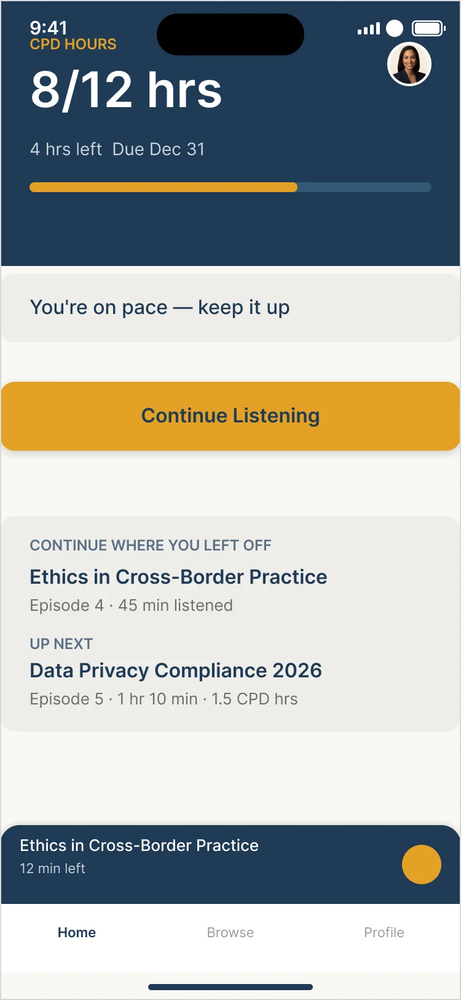
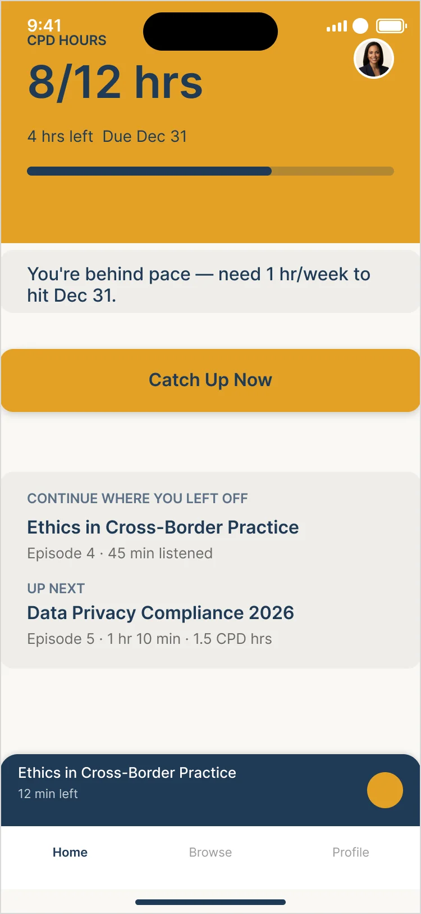
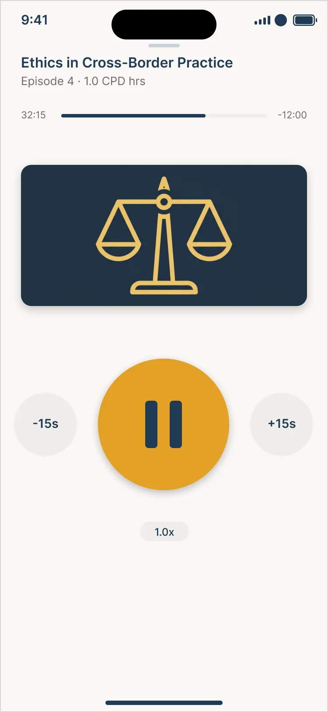
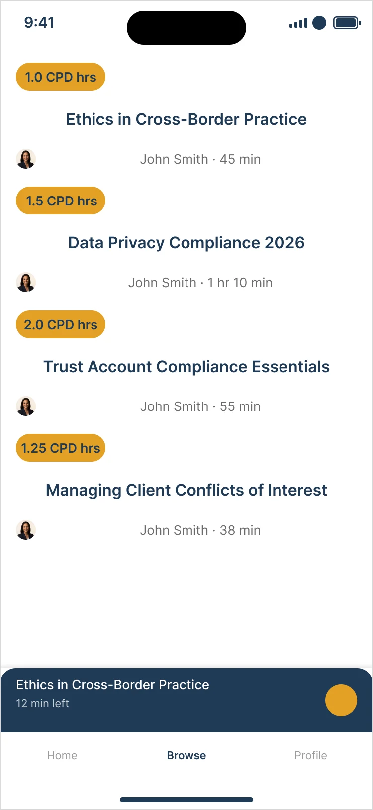
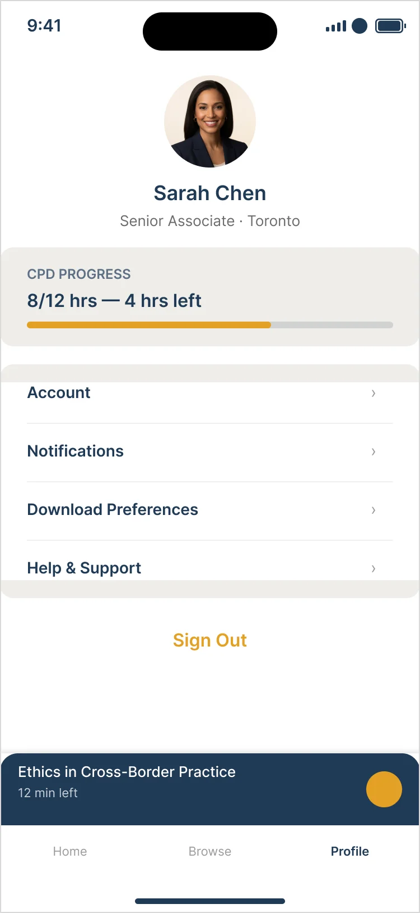

Redesigning a legal-education podcast app around compliance status and hands-free listening — allowing lawyers racing a CPD deadline to track requirements at a glance and earn accredited hours without taking their eyes off the road.
RoleUX/UI Designer (Solo)
PlatformiOS + Android
ToolsFigma
TypeRedesign / audit of a real pre-seed concept
Problem & thesis
Built like a content library. Needed as a compliance dashboard.
The original product — a mobile-first podcast app that lets lawyers and paralegals earn CPD credit on the commute — was architected like generic content discovery: card feed, host photos, browsing-first IA. Its most valuable user doesn't need to browse.
Redesign the core experience around compliance status and hands-free, audio-first use — not content discovery.
Design thesis
Case study based on a real startup concept, used with the founder's blessing and renamed for portfolio use.
Persona
Sarah, 29 — Senior Associate, Toronto.
THE FAILURE MOMENT
It's November. She's 5 hours short. She tries to listen while driving, the app fails to log attendance, and she arrives at work frustrated — wasted time, still non-compliant.
Deadline
12 CPD hours by December 31.
Context
A 45-minute commute — hands and eyes busy.
Frustrations
Too many clicks, tiny controls, content over 2 hours.
Needs
To know instantly whether she's on track.
Principles
Four rules every screen had to pass.
01
Status before content
Hours remaining are always visible, never buried.
02
Hands-free first
Playback and navigation work without looking at the screen.
03
One primary action
No competing CTAs on a screen used while driving.
04
One accent, double duty
Gold is both the CTA color and the only urgency signal — no separate warning color.
User stories
Written with acceptance criteria, not wishes.
StoryAcceptance criteria
See my compliance progress the moment I open the app, so I know instantly if I'm on track.→Hours completed / required / deadline visible within 1 second of opening, no tap required.
One large, predictable playback control, so I can keep listening without looking.→Play/pause/skip in one tap, ≥44px target, persists across screens as a mini-player.
See a piece of content's CPD-hour value before starting it.→CPD-hour value is the dominant metadata on every card — above host photo and title styling.
Be warned before falling behind becomes urgent.→Required pace vs. actual pace is compared; the alert includes a concrete next action, not just a warning.
The screens
One screen, two states — and a player you can use by feel.
Home isn't two pages: On Track and Behind Schedule are two states of one screen, driven by a system-side pace calculation.

Home — On Track

Home — Behind Schedule

Player — Episode 5

Content List

Profile
Key decisions
The calls I'd defend in a critique.
DecisionRationale
Gold does double duty as CTA and urgency signal.→One accent keeps a driver's attention on one thing. Text on gold was corrected from #345875 (~3.35:1, fails AA) to #1F3A56 (~5.2:1, passes).
The catch-up banner appears on Content List, not Home.→Home already shows status — a banner there would contradict the data one line above it. Content List has no status of its own, so the banner adds information instead of duplicating it.
Artwork on the Player, not a transcript.→A transcript invites reading — unsafe while driving. Artwork gives recognition without demanding attention.
Designed for both iOS and Android.→Designing for one platform isn't accessible design — so both device chromes are in the deliverable, not implied.
Auto layout only where content repeats.→Tab bars, lists and cards reflow; one-off hero compositions with irregular spacing stay fixed on purpose.
Process & scope
From audit to wired prototype.
01Research & audit
02Principles
03Low-fi wireframes
04Hi-fi UI
05Prototype
06Polished iOS + Android
Deliberately out of scope
Notification preferences, full onboarding, and a separate catch-up screen — handled instead as a filtered state of the content list, not new IA.
Takeaways
Structure beats decoration.
Reflection
What I learned
The biggest improvement wasn't visual — it was re-deciding what the product is for. Once status came before content, every screen got simpler.
Next steps
What's next
Wire each episode card to its own Player variant, and test the hands-free flow with practicing lawyers on a real commute.